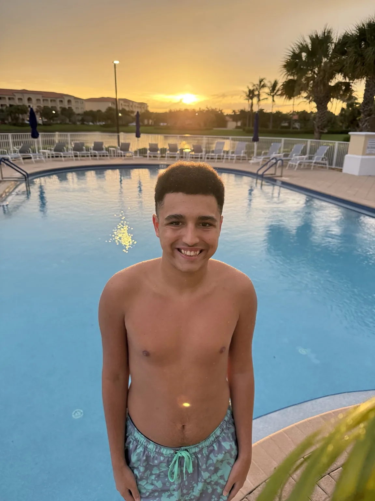
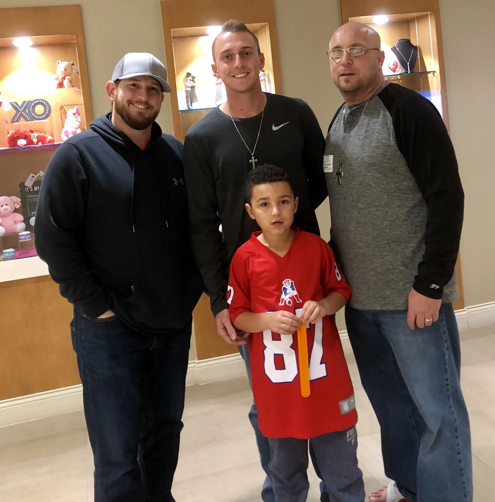
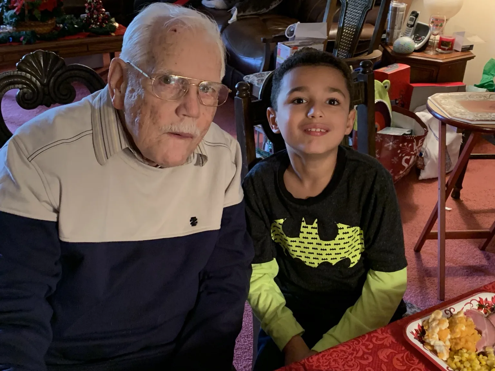
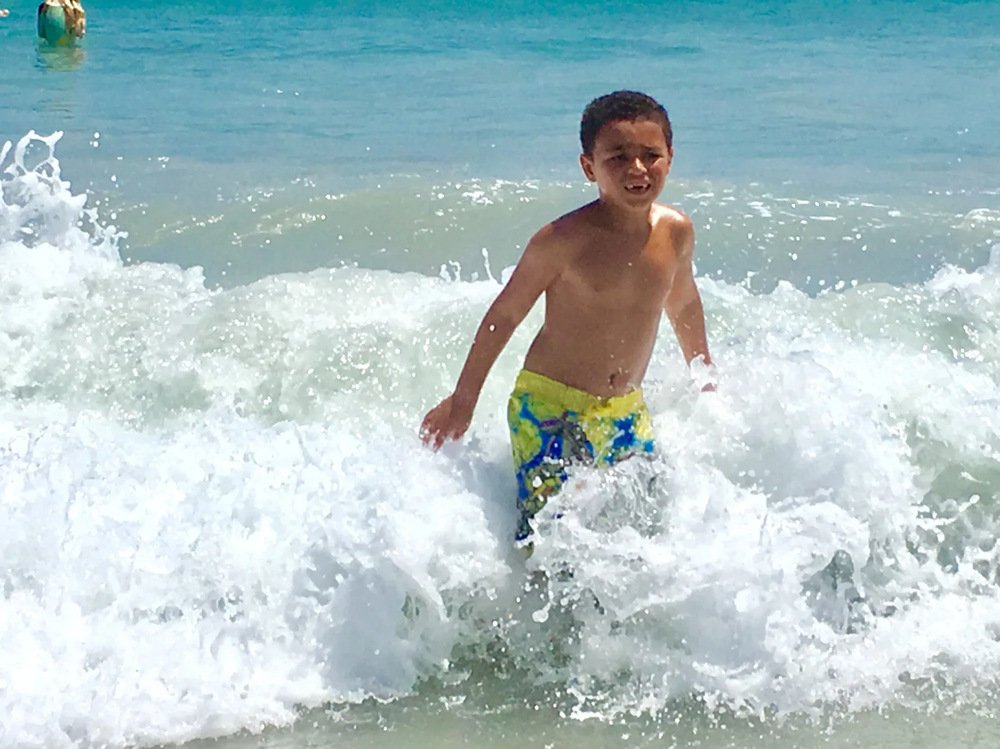
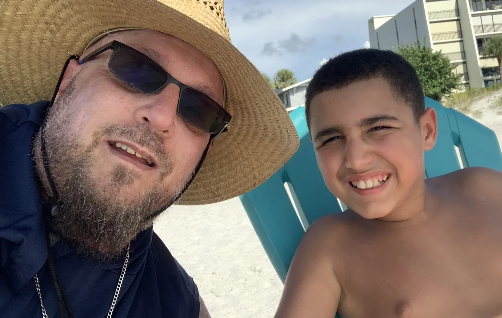

You and me, kid.
This page is intentionally visual first. Frank will take the final pass on the story in his own voice.
Evan is a son, brother, student, beach kid, friend, and teenager. The site should show a life unfolding — not a diagnosis.



The ocean has always been his place.
Movement, light, rhythm, and room to simply be. This is not decoration for the website. It is part of Evan’s life.
Something had stalled.
The point of this chapter is not to blame school or AAC. It is to show the moment the family realized that meaningful progress — especially communication — had slowed enough that something different had to be tried.

I thought I was the teacher.
The homeschooling year changed the lens. Evan kept finding his way back into deep iPad settings and diagnostic screens that were difficult for the adults around him to locate.
That was the shift: stop asking him to demonstrate knowledge only in the ways the adults were trained to recognize.
Watching what he chose when nobody was prompting him.

Meet him where he is.
This is where the philosophy becomes the product-development method: watch what he chooses, what he ignores, what he returns to, and what makes communication easier.
He came and got the tool.
The moment that matters is not a demo. It is initiation: Evan choosing the communication tool himself because he had something he wanted to say.
Not prompted.
The design had become useful enough that he returned to it voluntarily.
The product answered a real need.
That became the design test: does he choose it when nobody is making him?
He went back to school.
The website should report the observations carefully: more initiation, more independence, appropriate requests for help, and renewed academic engagement — without claiming the app caused every gain.
More independence
Teachers are seeing Evan complete more work after being shown how to begin.
Asking for help
The phone gives him a direct path to words when body language is not enough.
Showing up again
The story is not a miracle claim. It is a young person showing signs of re-engaging.
A door cracked open
The app did not put something inside Evan. It may have helped create a better path outward.
Evan Zachary. E.Z.
His mother chose Evan. Frank chose Zachary. The biblical story of Zechariah was known then; what nobody knew was how closely the idea of a silent man using a writing tablet would echo years later.
“You and me, kid. One day we’re gonna change the world.”
This is where Frank’s final copy should land the story. The app may be the beginning, not the ending.